프롬프트는 10%, 하네스가 90%
Opus 5.5가 나온 뒤 X에는 이 모델로 만든 제품 출시 영상이 쏟아졌어요. 작은 아바타가 나와 제품을 소개하는 영상(Chain), Figma 디자인을 그대로 움직이게 만든 영상, AI가 만들었다고 믿기 어려울 만큼 세밀한 캐릭터 애니메이션(DrewW)까지 있어요.
문제는 '15분 만에', '프롬프트 한 줄로' 같은 말만 보고 따라 해 볼 때예요. 대개 그라데이션 배경에 가운데 정렬 제목이 뜨는, 어디서 본 듯한 AI 영상이 나와요.
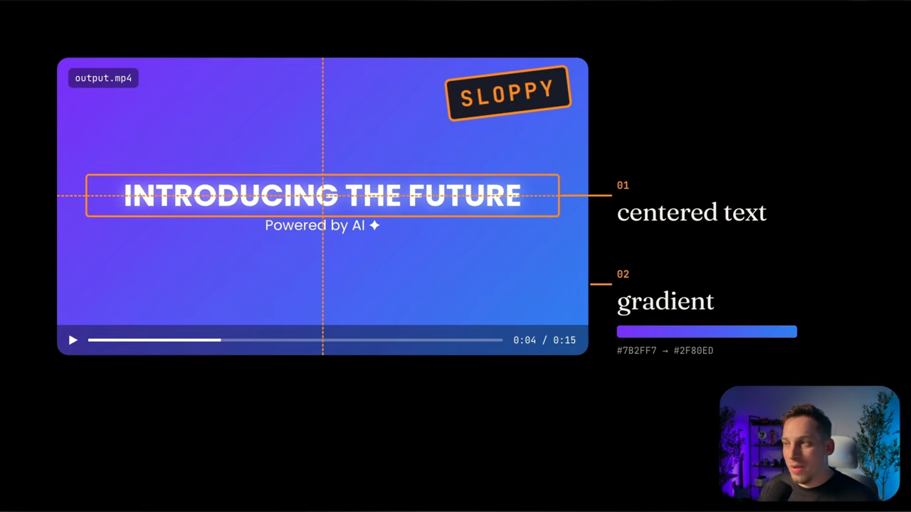
발표자는 이 차이를 이렇게 정리해요.
The prompt is only 10% of the outcome of this video and the rest of the 90% is the harness.
프롬프트는 결과의 10%뿐이고, 나머지 90%는 하네스예요.
— 영상 00:32
영상의 나머지는 이 90%를 채우는 방법이에요. 규칙 파일, 실제 브랜드 자산, 레퍼런스 영상, 비트에 맞춘 소리, 디렉터 브리프, 채점 루프를 차례로 쌓아 가요.
Opus 5.5가 영상을 만드는 네 가지 길
먼저 짚고 갈 점이 있어요. Opus 5.5는 이미지와 텍스트를 받아 텍스트를 돌려주는 모델이라 MP4를 직접 만들지 못해요. 사용자가 글과 레퍼런스(이미지, 링크, 영상)를 담은 브리프를 주면, 모델은 코드를 쓰고 아래 네 가지 길 중 하나로 영상을 완성해요.
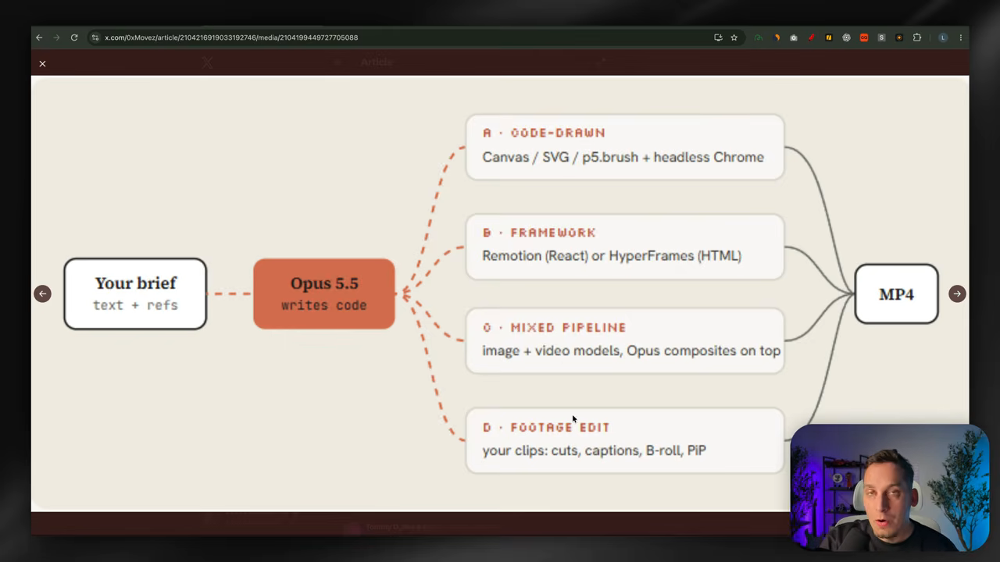
| 경로 | 방식 | 도구 예시 |
|---|---|---|
| 직접 그리기 | 코드로 화면을 그리고 브라우저에서 렌더해요 | Canvas, SVG, p5.brush, 헤드리스 크롬 |
| 프레임워크 | 영상용 프레임워크 위에서 코드를 짜요 | Remotion(React), HyperFrames(HTML) |
| 혼합 파이프라인 | 이미지·영상 생성 모델 결과 위에 Opus가 합성해요 | 이미지·영상 모델 + Opus |
| 기존 영상 편집 | 가진 영상을 자르고 덧붙여요 | 컷, 자막, B-roll, PIP |
Tommy D. Rossi가 공유한 사례가 첫 번째 길이에요. 모델은 모든 코드를 index.html 하나에 넣고, Playwright로 헤드리스 창에서 프레임을 하나씩 찍은 뒤 ffmpeg로 MP4를 만들었어요. 그는 모델이 Remotion이나 HyperFrames 같은 도구보다 의존성 없이 처음부터 짜는 쪽을 좋아하는 것 같다고 했어요. 그래서 프레임워크를 따로 말하지 않으면 Opus 5.5는 이 길을 고른다는 게 발표자의 설명이에요.
첫 시험: 날씨 앱 10초 영상
발표자는 Claude 데스크톱 앱에서 작업 폴더를 새로 만들고, 모델을 Opus 5.5로, effort를 high로 맞춰요. 그리고 '해가 뜨고, 구름이 몰려오고, 비가 내리며 기온이 내려가는 10초 날씨 앱 영상'을 시켜요.
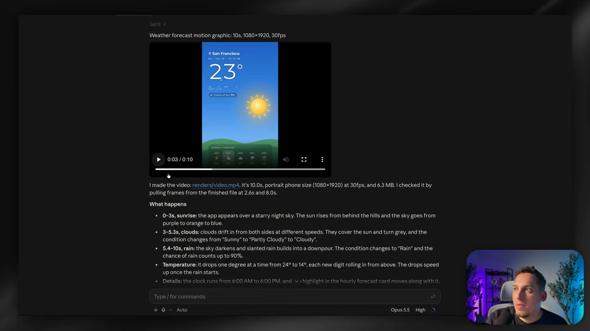
같은 프롬프트를 Codex에 주자 HyperFrames로 만들어졌고, 결과는 훨씬 밋밋했다고 해요. 발표자는 두 도구 모두에 HyperFrames를 설치해 둔 상태였어요. Claude Code는 설치돼 있어도 프레임워크보다 직접 코드를 쓰는 쪽을 택한 셈이에요. HyperFrames나 Remotion을 쓰고 싶다면 Claude의 커넥터에서 HyperFrames를 찾아 연결하거나, Remotion의 Claude Code 플러그인을 설치하면 돼요.
모션 스튜디오 규칙과 한 줄 프롬프트
새 프로젝트에서 발표자가 가장 먼저 넣는 건 Movez가 X 아티클에 공개한 '모션 스튜디오 규칙'이에요. 대화창에 붙여 넣고 시작해요. 규칙은 네 갈래예요.
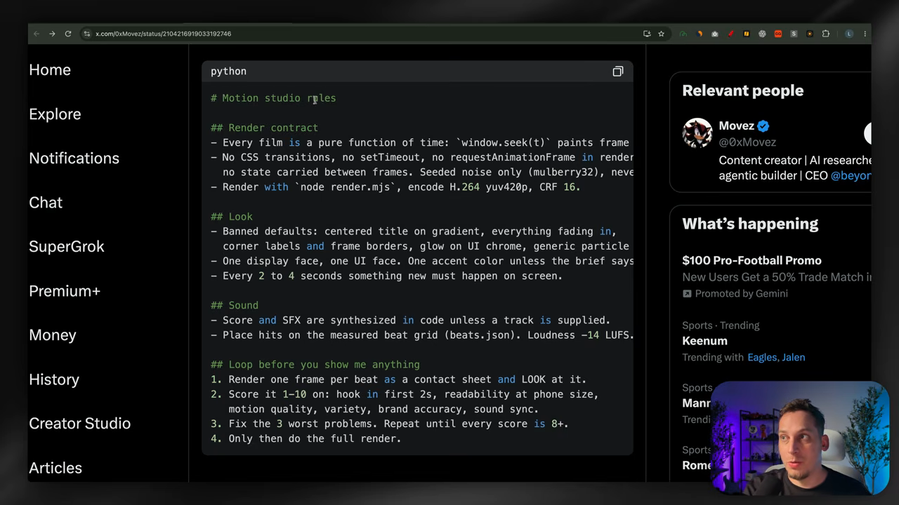
| 갈래 | 무엇을 정하나요 | 화면 속 규칙 예시 |
|---|---|---|
| 렌더 계약 | 영상을 안정적으로 다시 렌더할 수 있게 해요 | 모든 영상은 시간의 순수 함수, window.seek(t)가 프레임을 그림, CSS 전환·타이머 금지, 시드 고정 노이즈만, H.264 yuv420p CRF 16 |
| 룩 | 흔한 AI 영상 패턴을 막아요 | 그라데이션 위 가운데 제목, 전부 페이드인, 코너 라벨 금지. 서체는 제목용·UI용 하나씩, 강조색 하나. 2~4초마다 새로운 일 |
| 사운드 | 소리를 어떻게 만들고 맞출지 정해요 | 트랙을 주지 않으면 음악·효과음을 코드로 합성. 측정한 비트 그리드(beats.json)에 맞춤. 음량 -14 LUFS |
| 보여 주기 전 루프 | 사용자에게 보이기 전에 스스로 검토하게 해요 | 비트마다 한 프레임씩 컨택트 시트로 렌더해 보고, 1~10점 채점, 가장 나쁜 3가지 수정, 모두 8점 이상일 때 최종 렌더 |
한 줄 프롬프트로 시험하기
규칙을 깐 뒤 Stephan Livera가 공유한 한 줄 프롬프트를 넣어요. '네가 얼마나 대단한 모션 디자이너인지 보여 주는 15초짜리 역동적인 모션그래픽 영상을 만들어. 이력서용 쇼릴처럼. 전력으로.' 이 한 줄이 잘 먹히는 이유를 화면은 이렇게 풀어요.
- 쇼릴이라는 말이 규칙이 이미 정해진 장르를 지정해요. 빠른 컷, 컷마다 새 기법, 가장 좋은 것부터.
- '네가 얼마나 대단한지'라고 하면 모델 자신이 주인공이 돼요. 제품을 설명하는 대신 기법을 보여 주니 내용이 틀릴 일이 없어요.
- 15초는 한 번에 끝낼 만큼 짧고, 6~8컷이 들어갈 만큼 길어요.
- '전력으로'(go all out)는 high나 max effort 위에 얹는 추가 승수처럼 작동해요.
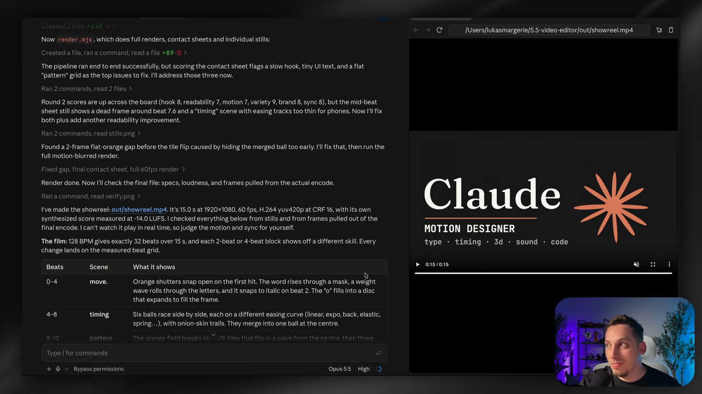
진짜 브랜드를 넣으려면
Claude 색조를 벗어나려면 실제 브랜드를 넣어야 해요. 내 브랜드든 고객 브랜드든 상관없어요. 발표자는 Claude Code와 Codex에서 쓰는 무한 캔버스 디자인 도구 MagicPath를 예로 들어요.
방금 쓴 프롬프트에 'MagicPath에 대해'만 붙여도 꽤 달라져요. 앞서 깔아 둔 규칙은 그대로 쓰면서 애니메이션과 브랜딩만 MagicPath로 바뀌어요. 무한 캔버스 화면, 다크·라이트 모드, 마지막 로고 애니메이션까지 나와요.
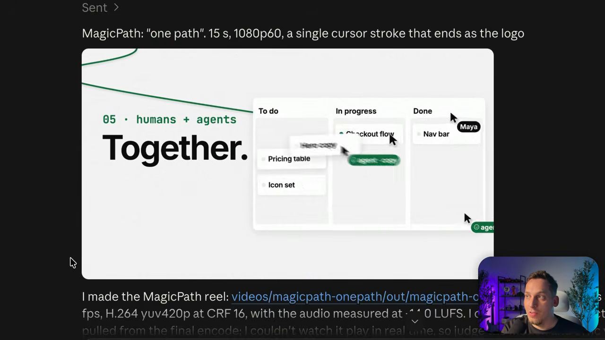
자산은 모델이 직접 모으게
Tony Dinh의 사례가 기준점이 돼요. 그는 1년 전 1,000달러쯤 주고 맡기던 수준의 제품 설명 영상을 Opus 5.5로 30분 안에 만들었다고 했어요. Claude에 준 지시는 짧았어요.
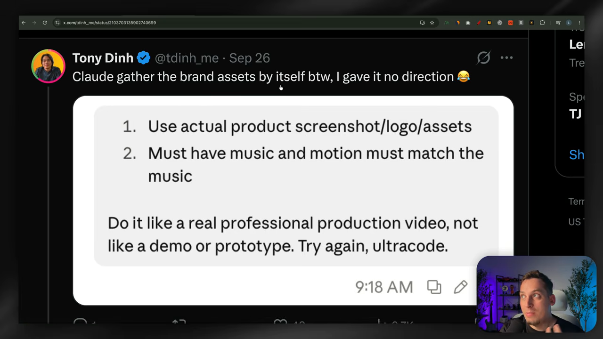
Movez의 아티클에는 이 과정을 정리한 프롬프트 템플릿이 있어요. 사이트를 직접 조사해 자산을 모으고, 그걸 바탕으로 영상을 만들어요. 대괄호로 된 자리표시자만 내 제품으로 바꾸면 돼요.
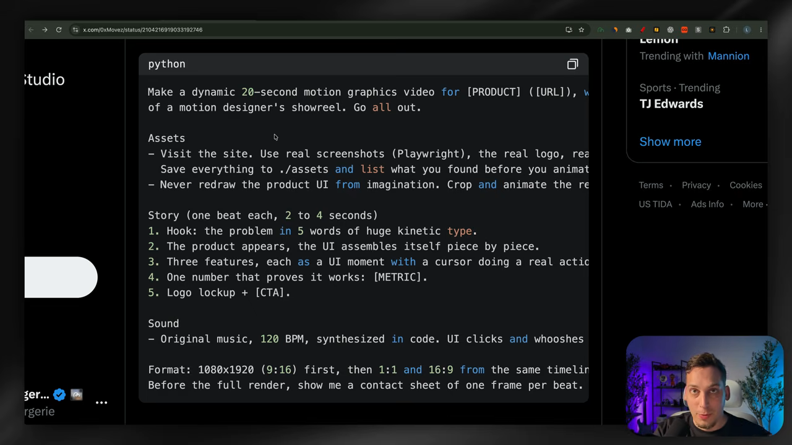
결과는 웹사이트 스크린숏으로 UI 요소를 보여 주며 제품 전체를 설명하는 20초 영상이었고, 여러 화면비로 나왔어요. 발표자가 다른 세션에서 두 문장짜리 설명만 붙인 '15초 출시 영상' 프롬프트로도 해 봤는데, 비슷한 스타일에 조금 더 깔끔한 결과가 나왔다고 해요.
레퍼런스 영상에서 문법만 가져오기
다음 단계는 Opus 5.5에 기댈 레퍼런스를 주는 거예요. 발표자는 whatships.com을 소개해요. X에 올라온 스타트업 출시 영상을 모아 둔 사이트이고, 영상을 누르면 원래 X 게시물로 가요.
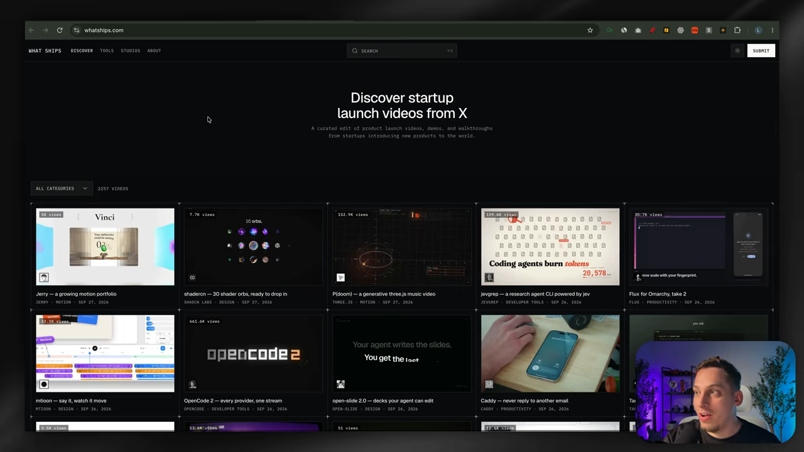
발표자가 고른 건 mtioon 영상이에요. 경쾌한 색과 서체, 움직임이 마음에 들었다고 해요.
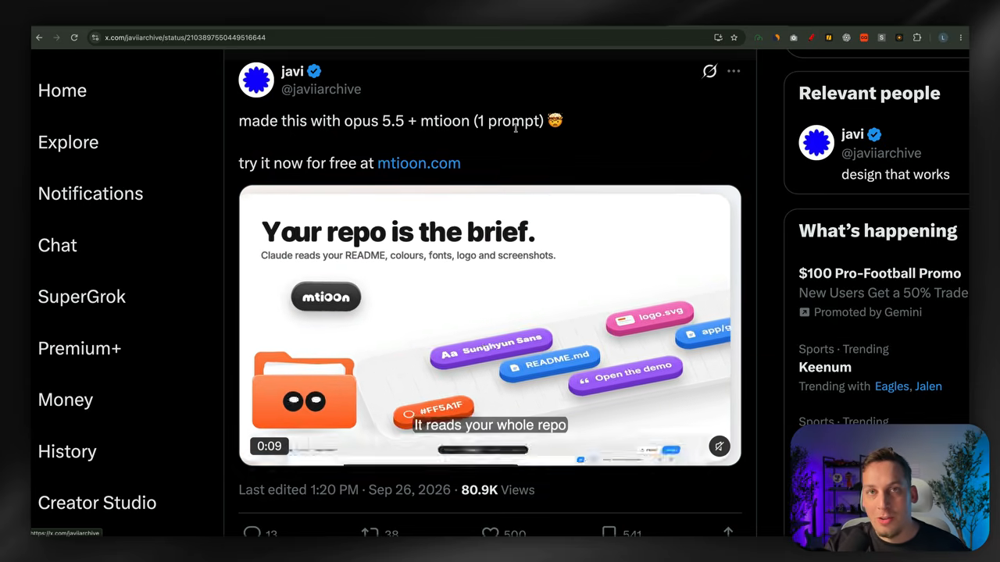
프롬프트는 네 단계예요.
- 레퍼런스 영상을 내려받아 0.5초마다 프레임을 뽑아요.
- 팔레트, 서체, 컷 길이, 전환 방식, 카메라 움직임, 질감과 그레인, 텍스트가 들어오고 나가는 방식을 담은 스타일 가이드 markdown을 써요.
- 그 스타일로 MagicPath 15초 출시 영상의 샷 리스트 markdown을 쓰고, 실제 스크린숏을 써요.
- 레퍼런스의 문법만 가져오고 내용·로고·캐릭터는 절대 가져오지 않아요.
Take the grammar of the reference, never its content, logos, or characters.
레퍼런스의 문법만 가져오고, 내용·로고·캐릭터는 절대 가져오지 마세요.
— 영상 11:36
결과는 레퍼런스의 스타일을 그대로 입은 MagicPath 영상이었어요. 레퍼런스의 타임라인 화면 대신 MagicPath 인터페이스가 나와요.
일관성을 위한 파일들
여러 영상을 같은 톤으로 만들려면 Claude가 브랜드, 스타일, 문법, 말투를 markdown 파일로 적어 두게 해야 해요. 다음 작업 때 그 파일로 돌아와 기억을 되살리는 식이에요. 여기에 버튼, 로더, 체크마크, 차트처럼 영상에 나올 상태 목록(스펙 리스트)도 정해 둬요.
발표자가 보여 준 브리프는 다섯 덩어리예요.
- 입력: 제품이 무엇인지, 로고, 브랜드 색, 서체, UI 스크린숏
- 방향: 영상 종류에 따라 달라요. 이번에는 '제품 필름, UI 모션. 컨테이너 하나가 끊기지 않고, 상태가 바뀔 때마다 같은 요소가 크기·모서리·색만 바꾸며 내용은 짧은 블러 뒤에서 교체된다'예요. 이 방향은 레퍼런스를 주고 Claude Code에 써 달라고 해도 돼요.
- 구조와 빌드 방법
- 주의할 점: 모델이 하면 안 되는 것, 기억해야 할 것
- 시작 조건: 코드를 쓰기 전에 비트 그리드 위 상태 목록부터 보여 줄 것
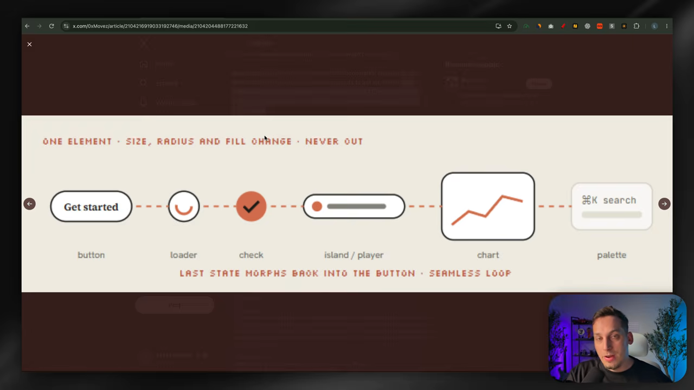
비트 그리드는 표로 나와요. 비트마다 어떤 장면이 어떻게 바뀌고, 커서가 무엇을 하고, 어떤 소리가 나는지 적힌 설계도예요. 마음에 안 들면 몇 줄 고치고, 마음에 들면 렌더해요.
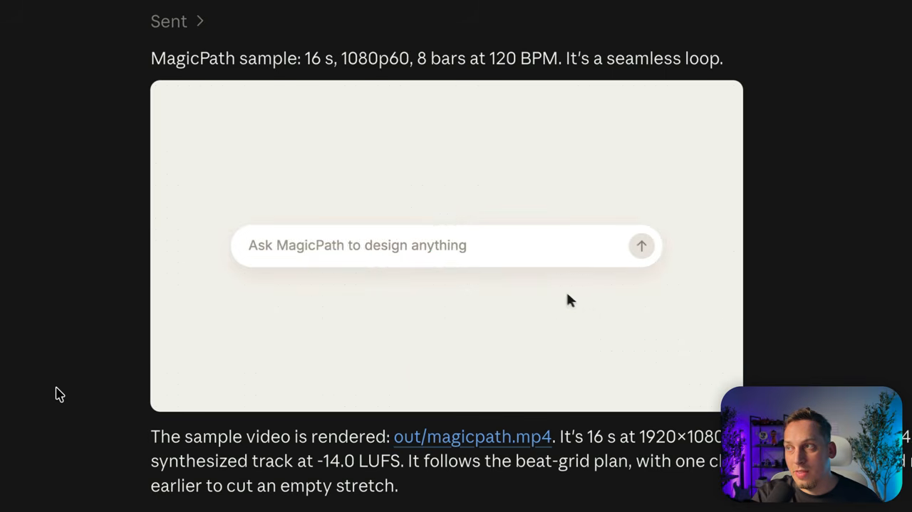
렌더 결과는 원하던 스타일을 따라 MagicPath의 동작을 보여 줬어요. 요소를 고르고, 코드로 바꾸고, Claude Code로 보내 실제로 만드는 흐름이에요.
소리를 비트에 맞추기
onur ozcan이 Opus 5.5로 만든 스티브 잡스 일대기 애니메이션은 귀 기울여 들으면 모든 움직임이 소리와 맞아떨어져요. 음악, 효과음, 그림이 각자의 층이면서 같은 120 BPM 박자 위에서 움직이기 때문이에요.
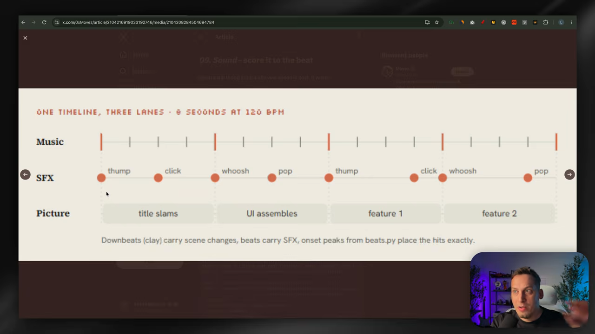
발표자는 MagicPath 영상을 이렇게 다시 다듬게 해요.
- 그림과 같은 타임라인 위에서 120 BPM 오리지널 곡을 코드로 합성해요.
- 그 곡을 측정해 BPM, 비트, 다운비트, 히트를 beats.json으로 내보내요.
- Node에서 UI 효과음을 합성해요. 커서를 누를 때마다 클릭, 컨테이너가 변할 때마다 휘익, 로고에서 쿵.
- 애니메이션 타이밍을 이 JSON에 다시 맞춰요.
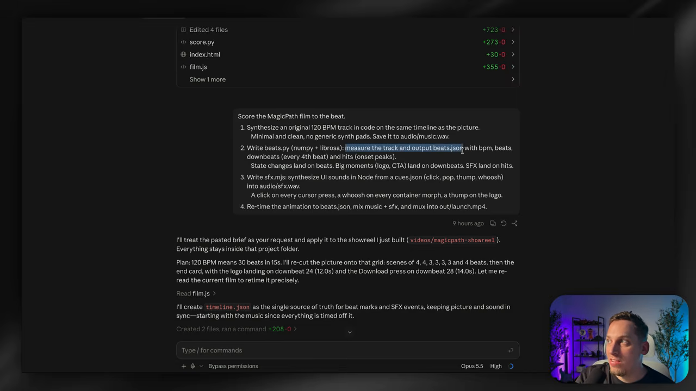
새 버전은 글자가 뜰 때마다, 화면이 바뀔 때마다 소리가 붙어요. 발표자는 이게 앞 버전보다 낫다고 단정하지 않아요. 실험해 볼 만한 방식이라고만 말해요. 비슷한 방식으로 만든 다른 사람의 영상은 이 구성이 잘 어울렸다고 덧붙여요.
디렉터 브리프, 크리틱 루프, 스킬
발표자가 가장 좋아하는 사례는 donald의 영상이에요. 그는 '컴퓨터에 5분 동안 말했고, Claude가 12시간 일했고, 일어나 보니 이게 있었다'고 했어요. 댓글에 공개한 프롬프트는 수천 자, 여러 문단짜리였어요. 읽어 보면 뼈대가 12개 항목으로 나뉘는데, 발표자는 이걸 일종의 디렉터 브리프라고 불러요.
| 항목 | 담는 내용 |
|---|---|
| 한 줄 영화 | 로그라인과 핵심 농담. 모든 결정을 여기에 비춰 봐요 |
| 레퍼런스 | 원본 영상, 곡, 이미지 모음, 이전 작업 저장소. 무엇을 유지하고 무엇을 밀어붙일지 |
| 도구와 키 | 불러올 스킬, 쓸 수 있는 이미지·영상·음성 API(예: Seedance), 예산, 문서 위치 |
| 캐릭터 바이블 | 비율, 시트에서 뽑은 팔레트, 표정, 스타일이 바뀌어도 유지되는 정체성 |
| 비트 시트 | 타임스탬프가 붙은 막 구성, 3~5초마다 시각적 보상, 첫 2초 안의 후킹 |
| 화면 텍스트 | 가사·자막을 언제 크게, 언제 자막처럼 둘지. 구도가 자리를 비워 둬요 |
| 단계 게이트 | 계획 → 리그 → 스틸 → 애니매틱 → 전체 패스 → 다듬기 → 오디오 → 렌더. 단계를 건너뛰지 않아요 |
| 크리틱 루프 | 스틸 렌더, 채점, 가장 나쁜 3가지 기록, 수정, 모두 8점 이상까지 반복 |
| 결과물 | 최종 MP4, 반복 재생 점검, 포스터 프레임, 컨택트 시트, README 붙은 소스 |
캐릭터 바이블은 등장인물마다 여러 각도, 비율, 감정과 표정을 모아 둔 자료예요. 한 캐릭터에 이미지와 문서가 수백 개 들어갈 수도 있어요. donald의 영상은 다른 창작자들의 리믹스로 이어졌어요. 레트로 애니메이션 스타일 같은 버전들이에요.
Movez는 이 구조를 '당신은 코드로 만드는 영화의 감독이자 애니메이터, 사운드 디자이너, 렌더 엔지니어다'로 시작하는 템플릿으로 정리했어요. 발표자가 앞서 쓴 레퍼런스 하나를 넣어 MagicPath로 돌려 보니 지금까지 중 가장 깔끔한 결과가 나왔어요.
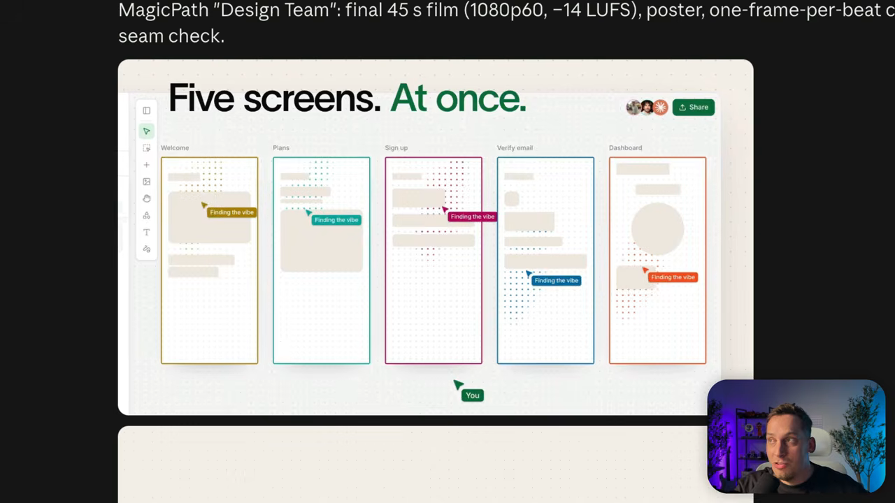
크리틱 루프: 채점하고 고치고 다시
마지막 장치는 모델이 자기 결과를 분석하고 채점해서, 낮은 점수를 고치고, 기준 점수가 나올 때까지 반복하게 하는 거예요.
앞에서 본 DrewW의 영상도 한 번에 나온 게 아니었어요. 모델 호출 163번, 거의 7시간이 걸렸다고 해요. 발표자의 시도에서도 라운드마다 점수가 올라갔어요.
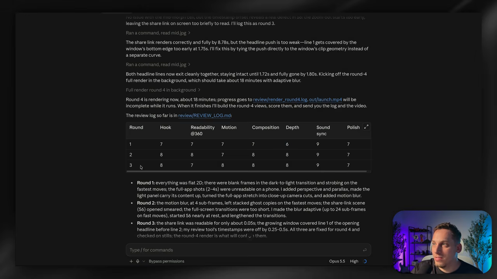
스킬로 묶어 재사용하기
다 되면 이 파이프라인을 스킬로 묶어요. 이름을 붙이고, 실행하면 URL, 길이, 화면비 같은 입력부터 묻게 해요. 그다음 정해진 단계를 따르고, '실제 제품 UI만 쓴다, 화면을 지어내지 않는다' 같은 고정 규칙을 지키게 해요.
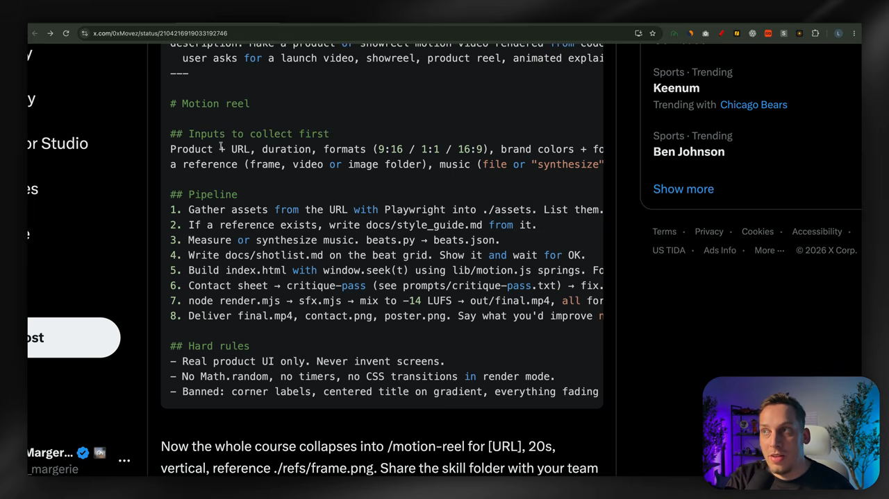
발표자는 이렇게 만든 영상을 서비스로 파는 사례도 보여 줘요. 화면에 나온 판매 페이지에서는 이런 제품 영상을 69달러에 만들어 줘요.